Сигнал — умовний видимий чи звуковий знак, за допомогою якого подається певний наказ. Сигнал є наказом і вимагає беззаперечного виконання.
Поняття про пристрої СЦБ
Комплекс технічних засобів залізничної автоматики називають пристроями СЦБ — сигналізації, централізації і блокування. Вони збільшують пропускну спроможність ліній і станцій та забезпечують безпеку руху. За місцем дії поділяються на пристрої на перегонах і на станціях.
| Складова | Визначення | Детально |
|---|---|---|
| Сигналізація | Єдина система сигналів і технічних засобів для передачі наказів | розділи нижче |
| Централізація | Комплекс засобів для керування стрілками і сигналами з одного пункту | ЕЦ і маршрути |
| Блокування | Система, що забезпечує розмежування поїздів під час руху лінією | Блокування |
Класифікація сигналів
За сприйняттям
- Видимі — виражаються кольором, формою, положенням і числом показань. Прилади: світлофори, диски, щити, ліхтарі, прапорці, сигнальні покажчики та знаки.
- Звукові — поєднання звуків різної тривалості та кількості; значення вдень і вночі однакове. Прилади: свистки локомотивів, ручні свистки, духові ріжки, сирени, петарди.
Видимі — за часом застосування
- Денні — диски, щити, прапорці, сигнальні покажчики.
- Нічні — вогні ліхтарів визначених кольорів. Застосовуються і вдень у туман, заметіль, за поганої видимості.
- Цілодобові — вогні світлофорів, світлові покажчики, червоні диски зі світловідбивачем, сигнальні знаки.
У тунелях застосовуються тільки нічні або цілодобові сигнали.
Кольори сигналів
За ПТЕ (п. 6.2) для руху поїздів застосовуються три основні кольори:
| Колір | Значення |
|---|---|
| Зелений | Дозволяє рух із встановленою швидкістю |
| Жовтий | Дозволяє рух і вимагає зменшення швидкості |
| Червоний | Вимагає зупинки |
| Місячно-білий | Під час маневрів дозволяє рух; на вхідних, вихідних і маршрутних світлофорах — запрошувальний сигнал |
| Синій | Під час маневрів забороняє рух |
Поблизу колій заборонено влаштовувати освітлення й рекламу, які можна сплутати з сигнальними вогнями.
Світлофори
Конструкція і кріплення
На залізницях України застосовуються лінзові світлофори: кожне показання дає окремий лінзовий комплект (кольорова та безбарвна лінза, лампа), над кожною лінзою — козирок від сонця. Головка чорна з білим контрастним кантом. Раніше трапляються й прожекторні світлофори, де кілька кольорів дає один оптичний комплект з рухомими світлофільтрами.
За способом встановлення світлофори УЗ бувають трьох видів:
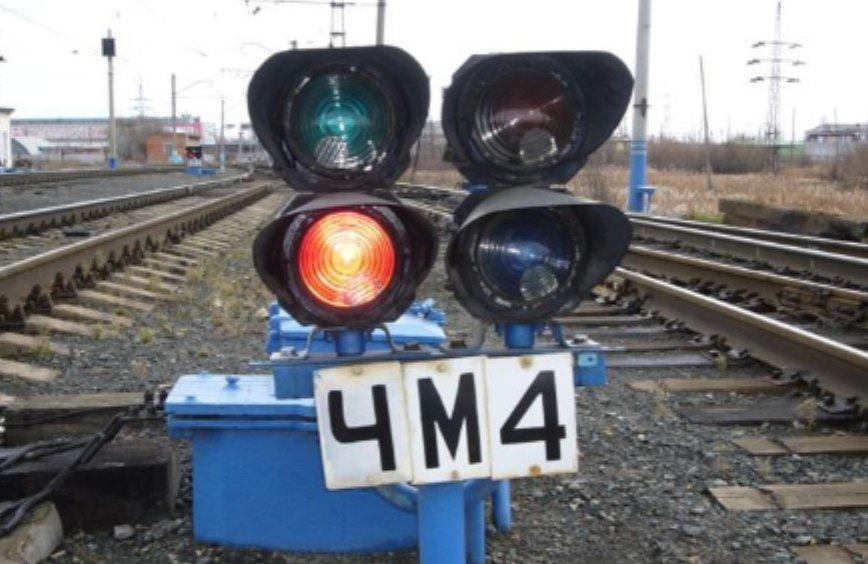
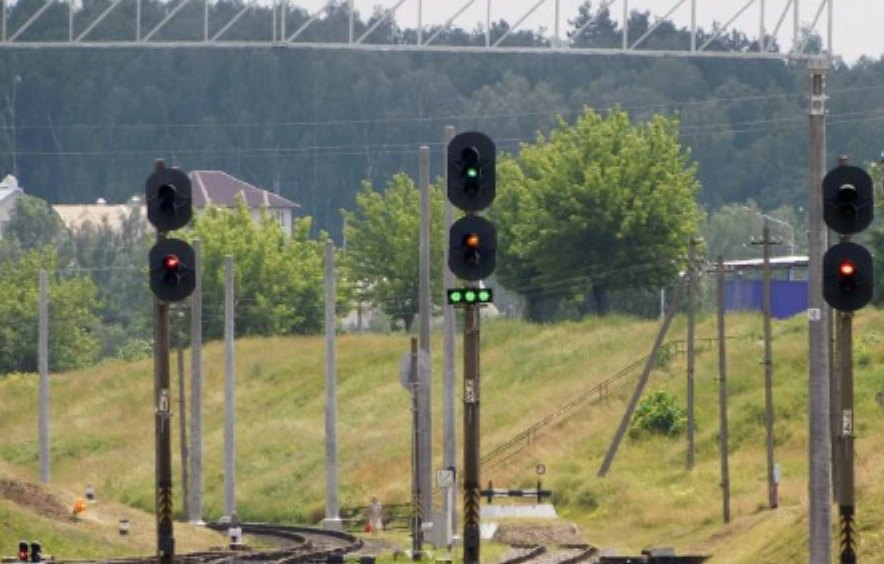
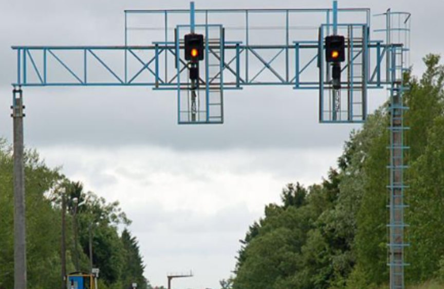
- Щоглові — головки на щоглі біля колії. Ставляться біля головних колій: вхідні, вихідні з головних колій, прохідні, загороджувальні. На вхідному світлофорі кілька головок: на малюнку ІСІ це дві головки по дві лінзи (жовта і зелена, червона і жовта) та окрема місячно-біла лінза запрошувального сигналу. Під головками може бути світлова смуга, а на щоглі — біла табличка з літерою світлофора.
- Карликові — низькі світлофори на фундаменті в міжколії. Застосовуються як маневрові та вихідні з бічних колій, де немає місця для щогли і не потрібна велика дальність видимості.
- На консолях і містках — головка підвішена над колією на консолі або сигнальному містку. Їх ставлять на великих станціях і електрифікованих дільницях, коли між коліями немає місця для щогли.
Світлофори за призначенням
| Вид | Що робить | Позначення |
|---|---|---|
| Вхідний | Дозволяє або забороняє поїзду проїхати з перегону на станцію | Н / Ч; додатковий НД, ЧД |
| Вихідний | Дозволяє або забороняє відправлення зі станції на перегін | Н/Ч + № колії: Ч3, НI |
| Маршрутний | Дозволяє чи забороняє проїзд з одного району станції до іншого | Н/Ч + М + № колії |
| Прохідний | Дозволяє чи забороняє проїзд з однієї блок-ділянки на іншу | Числа: парний напрямок 2, 4, 6…, непарний 1, 3, 5… |
| Прикриття | Огороджує перетини колій в одному рівні з іншими залізничними, трамвайними коліями, розвідні мости | Н/Ч + П |
| Загороджувальний | Вимагає зупинки при небезпеці на переїздах з черговим, великих штучних спорудах, обвальних місцях, при огородженні вагонів для огляду | З + номер |
| Попереджувальний | Попереджає про показання основного світлофора (вхідного, прохідного, загороджувального, прикриття) | П + позначення основного |
| Повторювальний | Повторює показання вихідного, маршрутного, гіркового світлофора, коли його погано видно | П + позначення основного |
| Маневровий | Дозволяє чи забороняє маневри | М + порядковий номер (парний / непарний залежно від горловини) |
| Гірковий | Дозволяє чи забороняє розпуск вагонів з гірки | Г + № |
| Локомотивний | У кабіні: дозволяє чи забороняє рух з однієї блок-ділянки на іншу, попереджає про показання колійного світлофора | — |
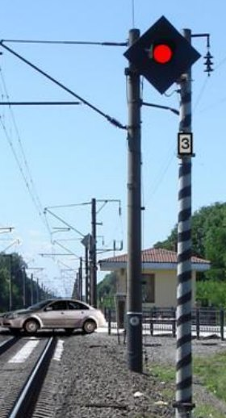
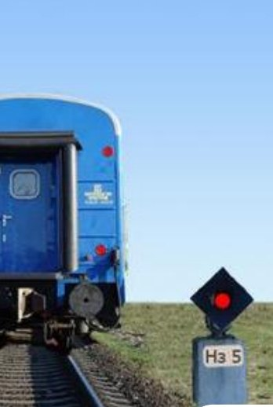
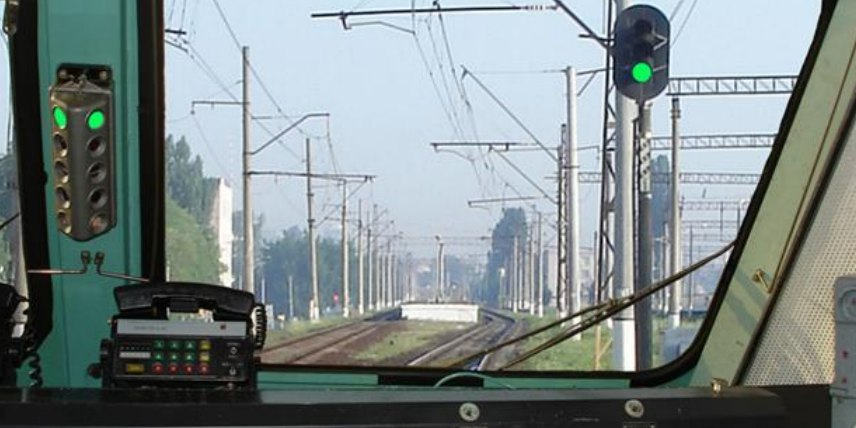
Один світлофор може поєднувати кілька призначень, наприклад вихідний і маневровий.
Розміщення та видимість за ПТЕ
| Вимога | Що встановлює ПТЕ |
|---|---|
| Де ставлять | Праворуч за напрямком руху або над віссю колії, до якої світлофор належить (п. 6.6) |
| Дальність видимості | Вхідні, прохідні, загороджувальні, прикриття: не менше 1000 м на прямій, 400 м у кривих. Вихідні й маршрутні головних колій — 400 м. Вихідні й маршрутні бічних колій, запрошувальні та маневрові — не менше 200 м (п. 6.4) |
| Вхідний | Не ближче 50 м від вістря першого вхідного стрілочного переводу (п. 6.10) |
| Вихідний | Для кожної колії відправлення, попереду місця зупинки локомотива (п. 6.11) |
| Прохідний | На межах блок-ділянок (п. 6.12) |
| Попереджувальний | Перед вхідним, прохідним, загороджувальним світлофором і світлофором прикриття на відстані не менше гальмового шляху (п. 6.5) |
Нормальне показання
- Прохідні світлофори автоблокування в нормальному стані показують дозволяючий сигнал.
- Вхідні, маршрутні та вихідні — забороняючий (червоний); відкриваються, коли маршрут приготовлено.
- Якщо пристрої керування несправні, світлофор автоматично показує забороняючий сигнал (п. 6.8).
Основні значення сигналів
Ці значення однакові незалежно від місця встановлення та призначення світлофора (ІСІ, розділ V).
| Назва | З | Жм | Ж | Жм+Ж | 2Ж | Ч | Б | С |
|---|---|---|---|---|---|---|---|---|
| Сигнал | ||||||||
| Показання | Один зелений | Один жовтий мигаючий | Один жовтий | Два жовті, верхній мигаючий | Два жовті | Один червоний | Один місячно-білий | Один синій |
| Значення | «Дозволяється рух із встановленою швидкістю» | «Дозволяється рух із встановленою швидкістю; наступний світлофор відкритий і вимагає проходження його із зменшеною швидкістю» | «Дозволяється рух з готовністю зупинитися; наступний світлофор закритий» | «Дозволяється проходження світлофора із зменшеною швидкістю; поїзд прямує з відхиленням по стрілочному переводу; наступний світлофор відкритий» | «Дозволяється проходження світлофора із зменшеною швидкістю та готовністю зупинитися біля наступного світлофора; поїзд прямує з відхиленням по стрілочному переводу» | «Стій! Забороняється проїжджати сигнал» | «Дозволяється проводити маневри» | «Забороняється проводити маневри» |
Позначення: З — зелений, Ж — жовтий, Ч — червоний, Б — місячно-білий, С — синій, «м» — мигаючий, ЗС — зелена світлова смуга. Номер у рядку «Рис. ІСІ» відкриває малюнок з Інструкції.
Вхідні світлофори
Вхідний світлофор дозволяє або забороняє поїзду прямувати з перегону на станцію (п. 5.1.1). Вогні зверху вниз: жовтий, зелений, червоний, жовтий, місячно-білий. Зелена світлова смуга додається для стрілок з хрестовинами пологих марок (п. 5.1.2).
| Назва | З | Жм | Ж | Жм+Ж | 2Ж | Ч | Зм+Ж+ЗС |
|---|---|---|---|---|---|---|---|
| Сигнал | |||||||
| Показання | Один зелений | Один жовтий мигаючий | Один жовтий | Два жовті, верхній мигаючий | Два жовті | Один червоний | Зелений мигаючий, жовтий і зелена смуга |
| Швидкість біля цього світлофора | Встановлена | Встановлена | Готовність зупинитися | Зменшена | Зменшена | Стоп | ≤ 80 |
| Наступний світлофор | Відкритий | Відкритий, вимагає зменшеної швидкості | Закритий | Відкритий | Закритий | — | Відкритий |
| Колія | Головна | Головна | Головна | Бокова | Бокова | — | Бокова, пологий перевод |
| Рис. ІСІ |
| Назва | Жм+Ж+ЗС | 2Ж+ЗС | Зм | 3Ж | Ч | 2Ж |
|---|---|---|---|---|---|---|
| Сигнал | ||||||
| Показання | Два жовті, верхній мигаючий, і зелена смуга | Два жовті й зелена смуга | Один зелений мигаючий | Три жовті¹ | Додатковий вхідний, червоний | Додатковий вхідний, два жовті |
| Швидкість біля цього світлофора | ≤ 80 | ≤ 60 | Встановлена | ≤ 20 | Стоп | Зменшена |
| Наступний світлофор | Відкритий, вимагає зменшеної швидкості | Закритий | Відкритий, далі пологий перевод | Маршрутний з червоним | — | Вихідний закритий |
| Колія | Бокова, пологий перевод | Бокова, пологий перевод | Головна | Вільна ділянка | — | З неправильної колії |
| Рис. ІСІ |
¹ Три жовті застосовують лише на окремих станціях: моторвагонний поїзд, одиночний локомотив або дрезина незнімного типу прямує на вільну ділянку з особливою обережністю. Для приймання з перегону по неправильній колії встановлюють додаткові вхідні світлофори, найчастіше карликові (НД, ЧД, рис. 5.12–5.13).
Запрошувальний сигнал
Запрошувальний сигнал — один місячно-білий мигаючий вогонь. Він дозволяє рух до наступного світлофора, а при прийманні на колію без вихідного світлофора до граничного стовпчика (п. 5.2). Застосовується на вхідних, маршрутних і вихідних (крім групових) світлофорах. Відправлення за ним з вихідного світлофора дозволено тільки по правильній колії двоколійного перегону з автоблокуванням. Кожне користування реєструється лічильником і записом у журналі ДУ-2 (див. Приймання поїздів).
| Назва | Ч+Бм | Ч+Бм |
|---|---|---|
| Сигнал | ||
| Показання | Червоний і місячно-білий мигаючий | Червоний і місячно-білий мигаючий |
| Світлофор | Лінзовий | Прожекторний |
| Швидкість | ≤ 20 | ≤ 20 |
| Далі | До наступного світлофора з особливою пильністю | До наступного світлофора з особливою пильністю |
| Рис. ІСІ |
Вихідні світлофори
Вихідний світлофор дозволяє або забороняє поїзду відправлятися зі станції на перегін. Якщо з колії можливе відправлення з відхиленням, світлофор має другу голову й зелену смугу (п. 5.3.1–5.3.2). Де АЛС є самостійним засобом сигналізації, місячно-білий вогонь означає, що далі поїзд прямує за показаннями локомотивного світлофора (п. 5.3.4).
| Назва | З | Ж | Ч | Жм+Ж | 2Ж | Зм+Ж+ЗС | 2Ж+ЗС |
|---|---|---|---|---|---|---|---|
| Сигнал | |||||||
| Показання | Один зелений | Один жовтий | Один червоний | Два жовті, верхній мигаючий | Два жовті | Зелений мигаючий, жовтий і зелена смуга | Два жовті й зелена смуга |
| Блокування | АБ | АБ | АБ | АБ | АБ | АБ | АБ |
| Швидкість біля цього світлофора | Встановлена | Готовність зупинитися | Стоп | Зменшена | Зменшена | ≤ 80 | ≤ 60 |
| Попереду | Наступний відкритий | Наступний закритий | — | Наступний відкритий | Наступний закритий | Наступний відкритий | Наступний закритий |
| Маршрут | Без відхилення по стрілочному переводу | Без відхилення по стрілочному переводу | — | З відхиленням по стрілочному переводу | З відхиленням по стрілочному переводу | Пологий перевод | Пологий перевод |
| Рис. ІСІ |
| Назва | З | Ч | 2Ж | Жм+Ж | З+Б | З | Ж+Б |
|---|---|---|---|---|---|---|---|
| Сигнал | |||||||
| Показання | Один зелений | Один червоний | Два жовті | Два жовті, верхній мигаючий | Зелений і місячно-білий | Один зелений | Жовтий і місячно-білий |
| Блокування | НАБ | НАБ | НАБ | НАБ | АЛС | АЛС | АЛС |
| Швидкість біля цього світлофора | Встановлена | Стоп | Зменшена | Зменшена | Встановлена | Встановлена | Готовність зупинитися |
| Попереду | Перегін вільний | — | Перегін вільний | Перегін вільний, вхідний сусідньої станції відкритий² | Вільні 3+ блок-ділянки, на локомотивному світлофорі зелений | Перегін вільний, на локомотивному світлофорі зелений | Вільні 1–2 блок-ділянки, на локомотивному світлофорі жовтий |
| Маршрут | Без відхилення по стрілочному переводу | — | З відхиленням по стрілочному переводу | З відхиленням по стрілочному переводу | Без відхилення по стрілочному переводу | Без відхилення по стрілочному переводу | Без відхилення по стрілочному переводу |
| Рис. ІСІ | — |
| Назва | 2Ж+Б | Жм+Ж+Б | Жм+Ж | Ч | 2З | Жм+Б | Б |
|---|---|---|---|---|---|---|---|
| Сигнал | |||||||
| Показання | Два жовті й місячно-білий | Два жовті, верхній мигаючий, і місячно-білий | Два жовті, верхній мигаючий | Один червоний | Два зелені | Жовтий мигаючий і місячно-білий | Місячно-білий, червоний погашений |
| Блокування | АЛС | АЛС | АЛС | АЛС | АБ або НАБ | АЛС | Немає |
| Швидкість біля цього світлофора | Зменшена | Зменшена | Зменшена | Стоп | Встановлена | ≤ 40 | За жезлом або колійною запискою |
| Попереду | Вільні 1–2 блок-ділянки, на локомотивному світлофорі жовтий | Вільні 3+ блок-ділянки, на локомотивному світлофорі жовтий | Перегін вільний, на локомотивному світлофорі жовтий | — | При АБ вільні 2+ блок-ділянки, при НАБ вільний перегін | За локомотивним світлофором | — |
| Маршрут | З відхиленням по стрілочному переводу | З відхиленням по стрілочному переводу | З відхиленням по стрілочному переводу | — | Відгалуження, неправильна колія | Неправильна колія | Відгалуження |
| Рис. ІСІ | — |
² Коли попереджувального світлофора до вхідного наступної станції немає.
Маршрутні світлофори
Маршрутні світлофори подають ті самі сигнали, що й вхідні, але щодо наступного маршрутного чи вихідного світлофора (п. 5.4.1).
| Назва | З | Жм | Ж | Жм+Ж | 2Ж | Зм+Ж+ЗС | Ч |
|---|---|---|---|---|---|---|---|
| Сигнал | |||||||
| Показання | Один зелений | Один жовтий мигаючий | Один жовтий | Два жовті, верхній мигаючий | Два жовті | Зелений мигаючий, жовтий і зелена смуга | Один червоний |
| Швидкість біля цього світлофора | Встановлена | Встановлена | Готовність зупинитися | Зменшена | Зменшена | ≤ 80 | Стоп |
| Наступний світлофор | Відкритий | Відкритий, вимагає зменшеної швидкості | Закритий | Відкритий | Закритий | Відкритий, вимагає швидкості не більше 80 км/год | — |
| Колія | Головна | Головна | Головна | Бокова | Бокова | Бокова, пологий перевод | — |
Прохідні світлофори
Прохідні світлофори автоблокування стоять на межах блок-ділянок. Передвхідний світлофор має оповіщувальну табличку зі світловідбивачами, на значку її показано смугами (п. 5.5.3). При НАБ прохідні світлофори колійного поста одночасно є вхідними й вихідними (п. 5.5.4). Щит з літерою «Т» — умовно-дозволяючий сигнал на затяжних підйомах.
| Назва | З | Ж | Ч | З | Ж+З | Ж |
|---|---|---|---|---|---|---|
| Сигнал | ||||||
| Показання | Один зелений | Один жовтий | Один червоний | Один зелений | Жовтий і зелений | Один жовтий |
| Де застосовується | Тризначне АБ | Тризначне АБ | Тризначне АБ | Чотиризначне АБ | Чотиризначне АБ | Чотиризначне АБ |
| Швидкість біля цього світлофора | Встановлена | Готовність зупинитися | Стоп | Встановлена | Встановлена | Готовність зупинитися |
| Наступний світлофор | Відкритий | Закритий | — | Відкритий | Один жовтий | Закритий |
| Вільні блок-ділянки | 2 і більше | 1 | — | 3 і більше | 2 | 1 |
| Рис. ІСІ | — |
| Назва | Ч | Жм | Зм | З | Ч | Ч+Т |
|---|---|---|---|---|---|---|
| Сигнал | ||||||
| Показання | Один червоний | Один жовтий мигаючий | Один зелений мигаючий | Один зелений | Один червоний | Червоний і щит «Т» |
| Де застосовується | Чотиризначне АБ | Передвхідний | Передвхідний | НАБ, колійний пост | НАБ, колійний пост | Затяжний підйом |
| Швидкість біля цього світлофора | Стоп | Встановлена | Встановлена | Встановлена | Стоп | ≤ 20 (вантажний поїзд) |
| Наступний світлофор | — | Вхідний відкритий, вимагає зменшеної швидкості (бокова колія) | Вхідний відкритий, вимагає швидкості не більше 80 км/год (пологий перевод) | — | — | — |
| Вільні блок-ділянки | — | — | — | Перегін вільний | — | — |
| Рис. ІСІ |
Подивіться, як змінюються показання за поїздом, у симуляторі автоблокування. Світлові покажчики у вигляді стріл зберігають своє значення і в погаслому стані (п. 5.5.5).
Світлофори прикриття й загороджувальні
Світлофор прикриття подає один зелений («Дозволяється рух із встановленою швидкістю») або один червоний вогонь. Загороджувальний світлофор подає тільки один червоний вогонь, а попереджувальний до нього тільки один жовтий. Щогли цих світлофорів пофарбовані чорними й білими похилими смугами (п. 5.7).
| Назва | Ч | Ж | — | Ч |
|---|---|---|---|---|
| Сигнал | ||||
| Показання | Загороджувальний, червоний | Попереджувальний, жовтий | Погаслий | Загороджувальний НЗ, ЧЗ |
| Швидкість біля цього світлофора | Стоп | Готовність зупинитися | Не діє | Стоп |
| Значення | Огороджує переїзд, штучну споруду, обвальне місце | Загороджувальний закритий | Сигнального значення не має | Огороджує вагони на станційній колії |
| Рис. ІСІ |
Попереджувальні й повторювальні світлофори
Попереджувальні світлофори ставлять перед вхідними, прохідними й світлофорами прикриття на ділянках без автоблокування (п. 5.8.1).
| Назва | З | Ж | Жм | З |
|---|---|---|---|---|
| Сигнал | ||||
| Показання | Попереджувальний, зелений | Попереджувальний, жовтий | Попереджувальний, жовтий мигаючий | Повторювальний, зелений |
| Швидкість біля цього світлофора | Встановлена | Готовність зупинитися | Встановлена | Встановлена |
| Основний світлофор | Відкритий | Закритий | Вхідний відкритий, бокова колія | Вихідний або маршрутний відкритий³ |
| Рис. ІСІ | — |
³ Погаслий повторювальний вимагає особливої пильності; пасажирський поїзд із зупинкою відправляється тільки при зеленому вогні повторювального.
Локомотивні світлофори
На ділянках з автоблокуванням і АЛС локомотивний світлофор у кабіні повторює показання колійного світлофора, до якого наближається поїзд (п. 5.9.1).
| Назва | З | Ж | КЖ | Ч | Б |
|---|---|---|---|---|---|
| Сигнал | |||||
| Показання | Зелений | Жовтий | Жовтий з червоним | Червоний | Білий |
| На колійному світлофорі | Зелений, Жм, Зм, 2З або Ж+З | Один або два жовті | Червоний | Поїзд проїхав червоний | Показання не передаються |
| Швидкість | Встановлена | Готовність зупинитися | Готовність зупинитися | Стоп | За колійними світлофорами |
| Рис. ІСІ |
Коли АЛС — самостійний засіб сигналізації (п. 5.9.2): зелений — вільні три чи більше блок-ділянки; жовтий — вільна одна або дві, рух зі зменшеною швидкістю; жовтий з червоним — готовність зупинитися перед знаком «Межа блок-ділянки» (рис. 8.18 на сторінці знаків); червоний — поїзд увійшов на зайняту блок-ділянку.
Недіючі світлофори
| Назва | — |
|---|---|
| Сигнал | |
| Показання | Перехрещений двома планками, вогні погашені |
| Значення | Не діє |
| Рис. ІСІ |
Маневрові світлофори
| Назва | Б | С | Б | 2Б |
|---|---|---|---|---|
| Сигнал | ||||
| Показання | Один місячно-білий | Один синій | Карликовий, місячно-білий | Два місячно-білі |
| Значення | Маневри дозволено | Маневри заборонено | Маневри дозволено | Маневри дозволено, колія вільна (ЕЦ) |
| Рис. ІСІ | — |
- Дозвіл на маневри може подавати вихідний чи маршрутний світлофор, поєднаний з маневровим: місячно-білий при погашеному червоному.
- Для поїзних маршрутів біле й синє показання маневрових світлофорів сигнального значення не мають.
- За рішенням начальника залізниці замість синього може бути червоний вогонь, наприклад на виїзді з під'їзних колій.
Гіркові світлофори
Гірковий світлофор має покажчик, на якому при осаджуванні світиться літера «Н» (п. 9.2).
| Назва | З | Ж | Ж+З | Ч | Ч+Н |
|---|---|---|---|---|---|
| Сигнал | |||||
| Показання | Один зелений | Один жовтий | Жовтий і зелений | Один червоний | Червоний і літера «Н» |
| Значення | Розпуск зі встановленою швидкістю | Розпуск зі зменшеною швидкістю | Розпуск з проміжною швидкістю | «Стій! Забороняється розпуск» | Осадити вагони з гірки |
| Рис. ІСІ |
Ручні сигнали
Ручні сигнали подають прапорцями, ручним ліхтарем, диском або рукою. Вдень і вночі вони різні, тому на малюнках ІСІ показано обидва варіанти. Натисніть на малюнок, щоб збільшити його.
«Стій!» і зменшення швидкості
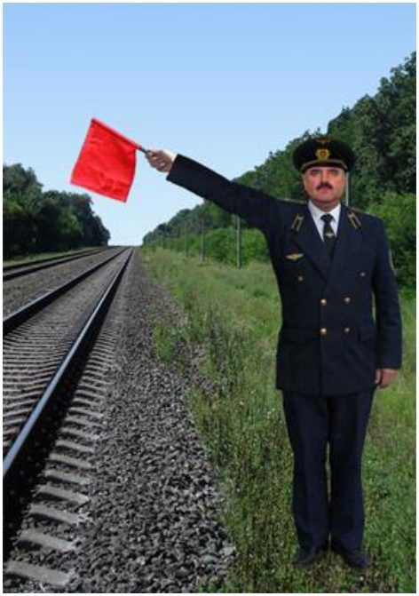
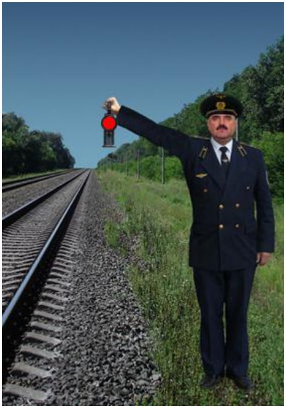
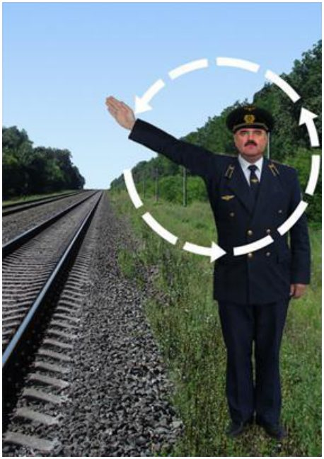
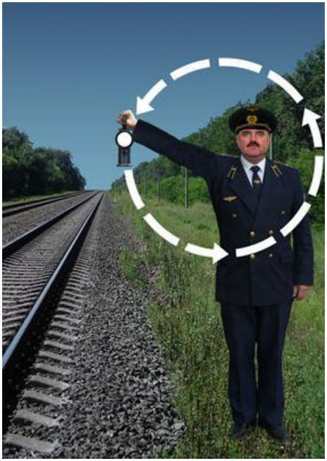
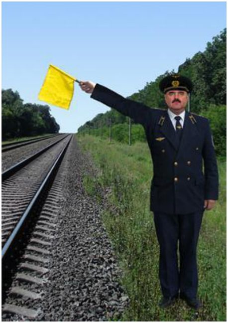
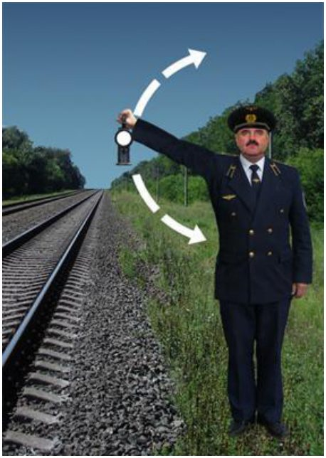
Випробування автогальм
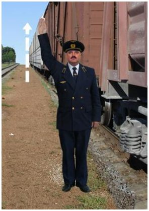
вдень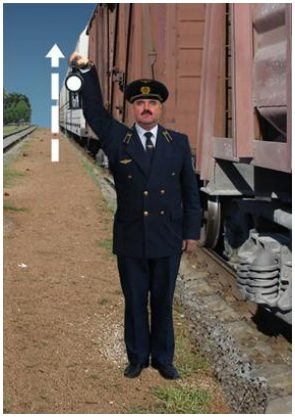
вночі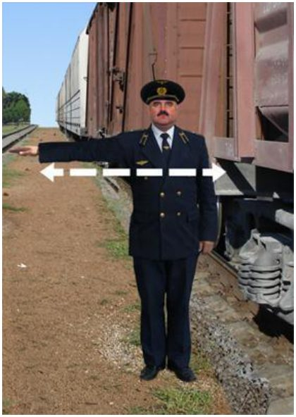
вдень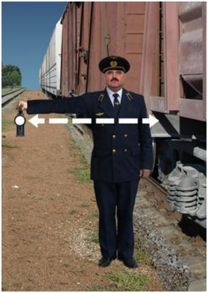
вночіСигнали чергового по станції
ДСП зустрічає й проводжає поїзди в головному уборі з червоним верхом (п. 7.3).
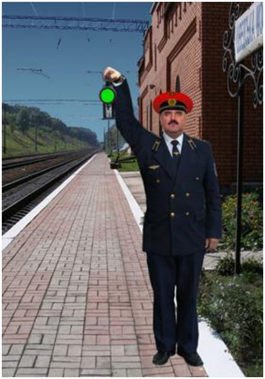
вночі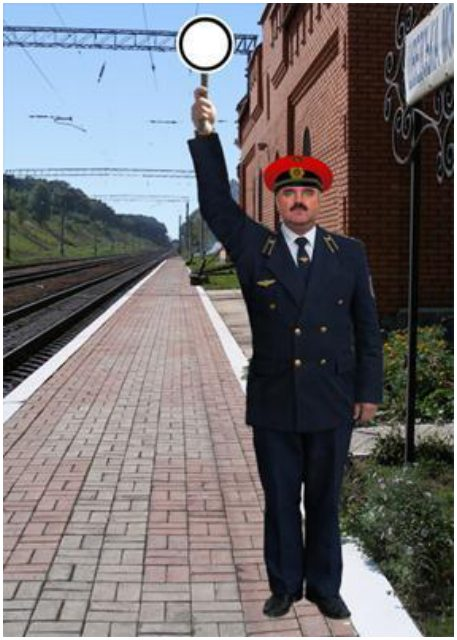
вдень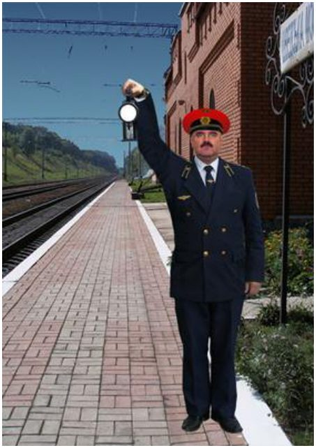
вночі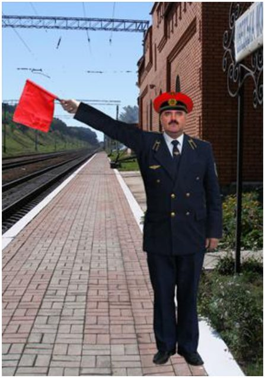
вдень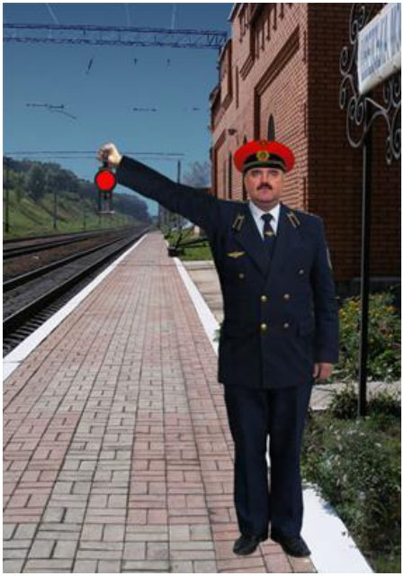
вночіЯкщо робоче місце ДСП винесене на стрілочний пост, при прийманні на бокову колію чи з зупинкою він показує розгорнутий жовтий прапорець вдень і жовтий вогонь вночі.
Сигналісти й чергові стрілочних постів
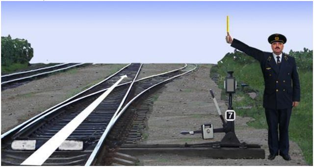
вдень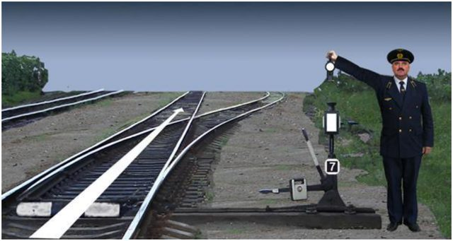
вночі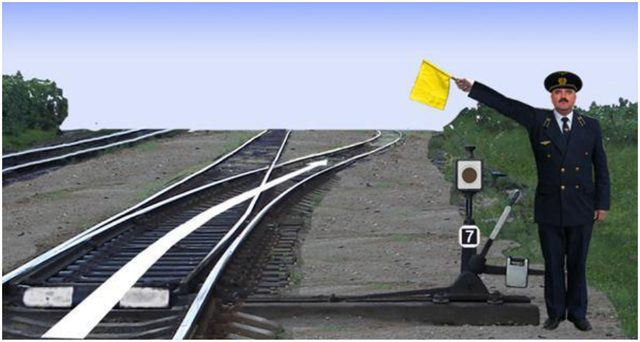
вдень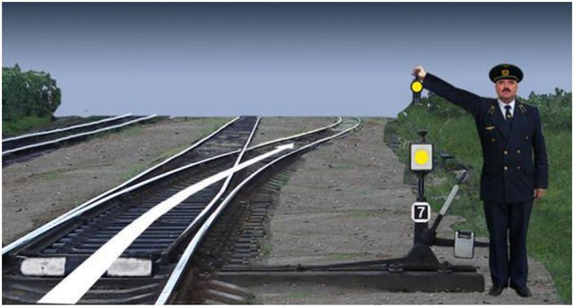
вночі- Поїзди, що відправляються, проводжають згорнутим жовтим прапорцем вдень і прозоро-білим вогнем вночі (п. 7.5).
- Сигнал зупинки з поїзда машиністу: розгорнутий червоний прапорець вдень, червоний вогонь вночі (п. 7.6).
- Провідники штабного й хвостового вагонів при відправленні пасажирського поїзда показують у бік платформи згорнутий жовтий прапорець вдень і прозоро-білий вогонь вночі (п. 7.7).
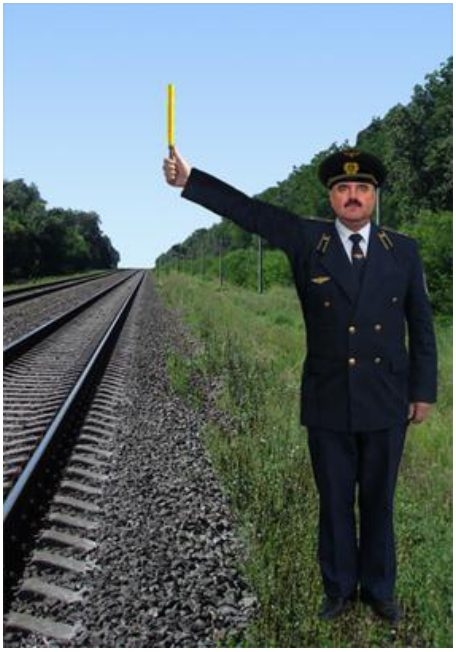
вдень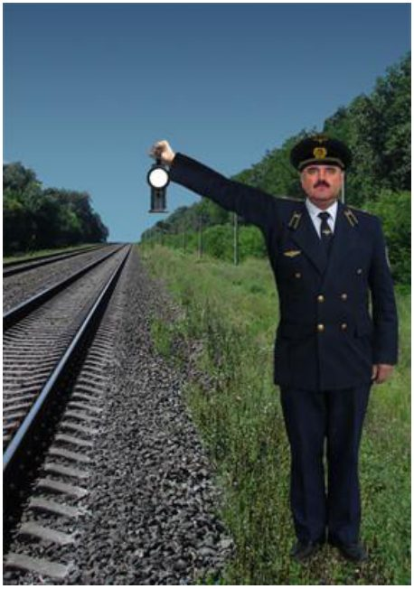
вночіРучні сигнали під час маневрів
Кожен сигнал можна подати й звуком ручного свистка або духового ріжка. Сигнали повторюються свистками локомотива, які підтверджують прийняття до виконання (п. 9.4–9.5).
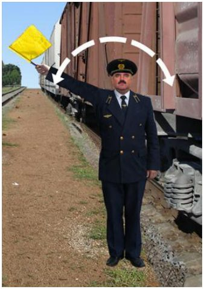
вдень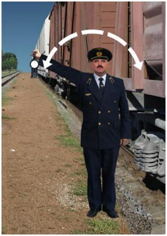
вночі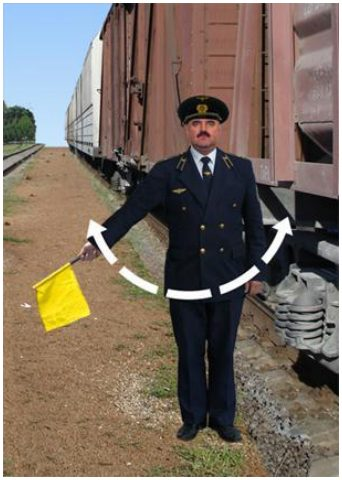
вдень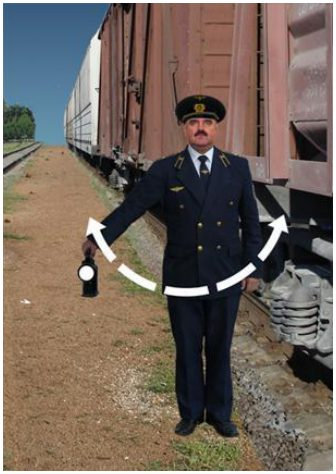
вночі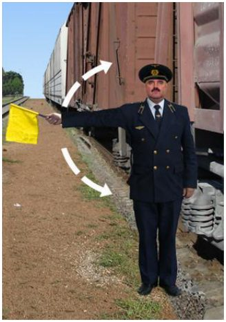
вдень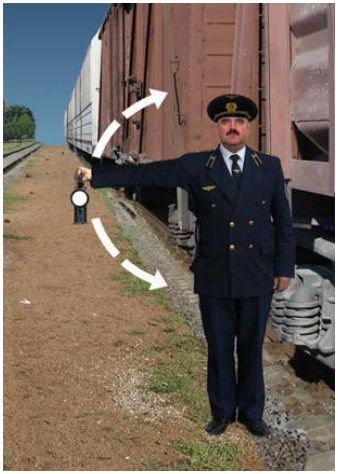
вночі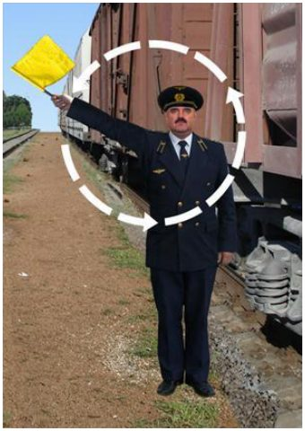
вдень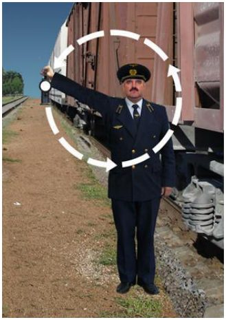
вночі| Сигнал | Звуком |
|---|---|
| Локомотиву вперед | |
| Локомотиву назад | |
| «Тихіше» | |
| «Стій!» |
Звукові сигнали
Сигнали свистком локомотива
● — короткий звук, ▬ — довгий. Натисніть «Слухати», щоб почути сигнал, і «Стоп», щоб зупинити.
| Сигнал | Значення |
|---|---|
| Один довгий: «Відправитися поїзду»; сповіщальний сигнал; маневри — «вперед» | |
| Два довгих: «Відпустити гальма»; маневри — «назад» | |
| Три довгих: «Гальмувати» | |
| Три коротких: «Стій!» | |
| Два коротких: «Тихіше» (під час маневрів) | |
| Три довгих і один короткий: прибуття поїзда на станцію не в повному складі | |
| Три довгих і два коротких: виклик до локомотива помічника машиніста, механіка-бригадира, керівника робіт господарського поїзда | |
| Один короткий і один довгий: сигнал пильності. Повторюється при проході прохідного з червоним, за запрошувальним сигналом, при прийманні на станцію при забороняючому вхідному (ІСІ, п. 11.3) | |
| Довгий, короткий, довгий: сповіщальний сигнал при прямуванні по неправильній колії (п. 11.2) | |
| Подвійна тяга, один короткий: машиністу другого локомотива зменшити тягу | |
| Подвійна тяга, два коротких: машиністу другого локомотива збільшити тягу | |
| Подвійна тяга, два довгих і два коротких: «Опусти струмоприймачі» | |
| Групи з одного довгого і трьох коротких: «Загальна тривога» | |
| Групи з одного довгого і двох коротких: «Пожежна тривога» | |
| Групи з одного довгого і одного короткого протягом 2–3 хвилин: «Радіаційна небезпека» чи «Хімічна тривога» | |
| Протяжне звучання сирен або безперервний ряд коротких звуків протягом 2–3 хвилин: «Повітряна тривога» |
Сповіщальний сигнал (один довгий) подається при наближенні до станцій, зупинних пунктів, сигналів зменшення швидкості, знаків «С», кривих, тунелів, переїздів, місць робіт і людей на колії. На двоколійних перегонах при зустрічі поїздів — один довгий при наближенні до зустрічного і ще один біля його хвоста (п. 11.2, 11.4). Обхідники й сигналісти оголошують наближення непарного поїзда одним довгим, парного — двома довгими (п. 11.5).
Звукові сигнали мають однакове значення вдень і вночі. Їх подають свистком локомотива, ручним свистком, духовим ріжком і сиреною.
Поїзні сигнали й огородження
Поїзні сигнали позначають голову й хвіст поїзда, щоб працівники станцій і зустрічних поїздів бачили напрямок руху та що поїзд іде в повному складі. Сигнали огородження захищають небезпечні місця й перешкоди на колії. Вказівки «праворуч» і «ліворуч» подано за напрямком руху. Усі малюнки — з ІСІ.
Голова поїзда
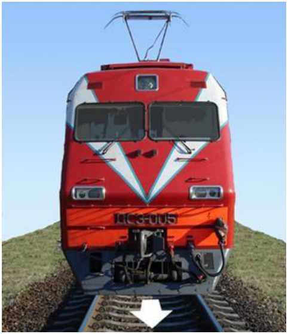
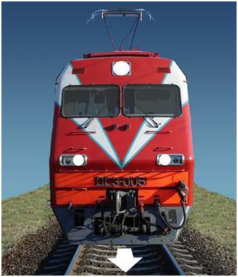
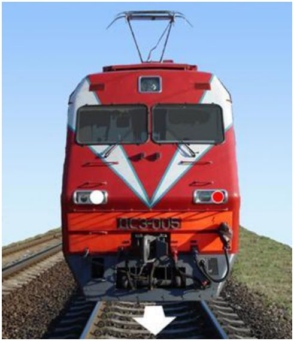
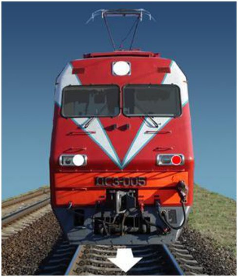
Вантажний поїзд вагонами вперед
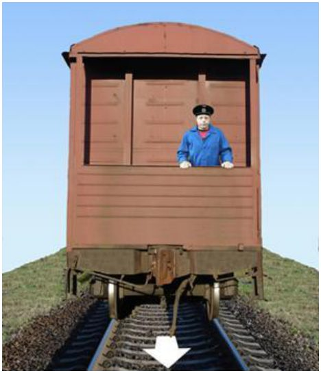
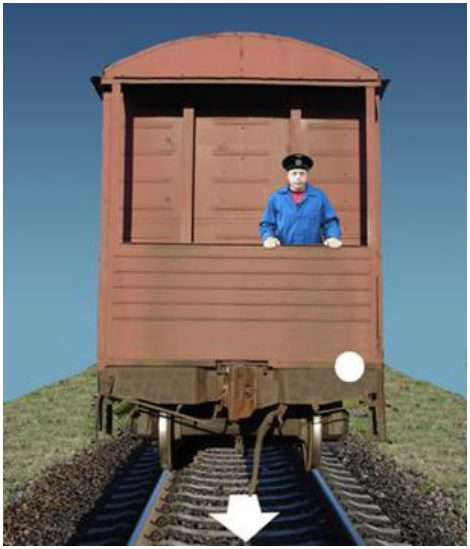
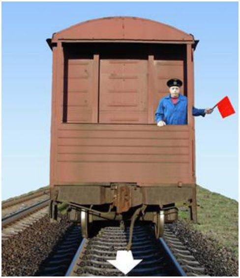
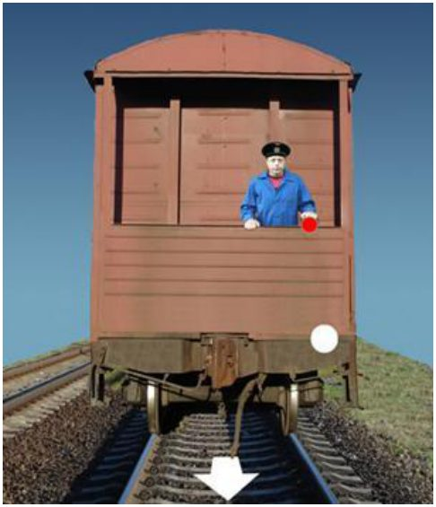
Хвіст поїзда
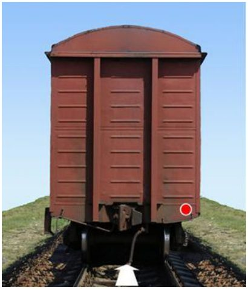
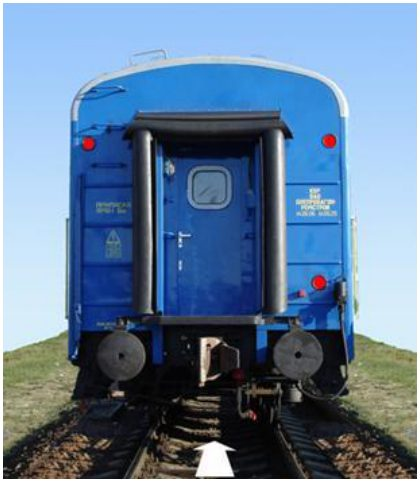
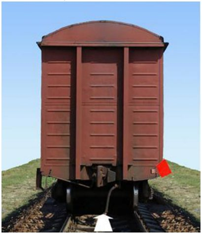
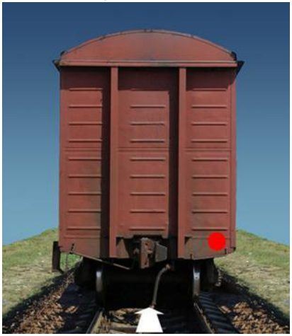
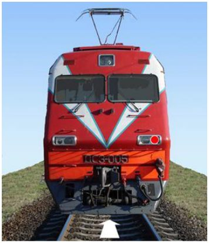
Підштовхуючий локомотив і дрезина незнімного типу позначаються так само, як локомотив без вагонів (п. 10.4). Вночі під час маневрів локомотив має по одному прозоро-білому вогню попереду й позаду з боку основного пульта (п. 10.9).
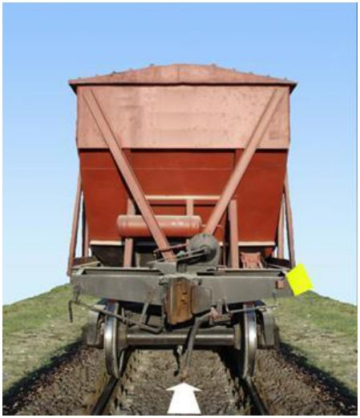
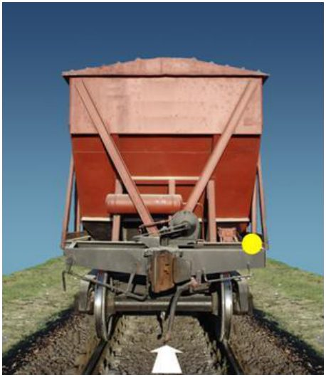
Снігоочисники
Сигнали огородження
Постійні сигнали
Місця постійного зменшення швидкості огороджують з обох боків знаками «Початок / Кінець небезпечного місця» за 50 м від меж, а від знаків на відстані А (таблиця 6.1 ІСІ) ставлять диски «Зменшення швидкості».
Тимчасові сигнали
Підходячи до тимчасового сигналу «Зменшення швидкості», машиніст подає один довгий свисток . Небезпечне місце позначають тимчасовими знаками:
Огородження перешкод на перегоні
Будь-яка перешкода на перегоні огороджується сигналами «Зупинка» незалежно від того, очікується поїзд чи ні. Сигнали ставлять з обох боків за 50 м від меж місця; від них на відстані Б (таблиця 6.1: 800–1700 м залежно від спуску й швидкості) укладають по три петарди, а ще за 200 м від першої петарди — сигнал «Зменшення швидкості». Петарди охороняють сигналісти з ручними червоними сигналами за 20 м від першої петарди в бік місця робіт. Сигналісти носять головний убір з жовтим верхом (п. 6.3.1).
Порядок огородження поїзда, що вимушено зупинився на перегоні, див. на сторінці Відбудовні поїзди.
Сигнальні знаки й покажчики
Сигнальні покажчики доповнюють сигнали: показують напрямок маршруту, положення стрілки, загородження колії. Сигнальні знаки — постійні або тимчасові щити на стовпчиках чи опорах контактної мережі, що попереджають машиніста про межі, небезпечні місця та порядок дій. Усі малюнки на цій сторінці взято з Інструкції з сигналізації (ІСІ), номери рисунків збігаються з інструкцією.
Маршрутні покажчики
Коли треба вказати колію приймання чи напрямок руху поїзда або маневрового состава, застосовують маршрутні світлові покажчики білого кольору (цифрові, літерні чи положення). Їх ставлять на щоглі світлофора або на окремій щоглі. На групових вихідних і маршрутних світлофорах номер колії, з якої дозволено рух, показує зелений маршрутний покажчик (ІСІ, п. 8.1).
Стрілочні покажчики
Освітлювані стрілочні покажчики поодиноких стрілок показують з обох боків (ІСІ, п. 8.2.1):
Перехресні стрілки позначають двома звичайними стрілочними покажчиками (п. 8.2.2):
Неосвітлювані стрілочні покажчики мають форму стріли (п. 8.2.3):
Покажчики колійного загородження
Інші світлові покажчики
Постійні сигнальні знаки
Попереджувальні знаки й межі
Небезпечні та розмивні місця
Граничні стовпчики
Граничний стовпчик показує місце, далі якого не можна ставити рухомий склад у бік стрілочного переводу чи глухого перетину. Фарбування стовпчиків головних і приймально-відправних колій відрізняється від інших колій (п. 8.8.5).
Знаки на електрифікованих ділянках
Тимчасові сигнальні знаки
Коли не можна проходити з піднятими струмоприймачами (несправність контактної мережі, ремонтні роботи), ставлять тимчасові знаки з відбивачами (п. 8.9.1). На двоколійній ділянці з тимчасовими з'їздами без контактної мережі знак «Опусти струмоприймача» ставлять не менше ніж за 100 м від огородженої ділянки.
Працівник, який раптово виявив пошкодження контактної мережі, відходить на 500 м назустріч поїзду й подає ручний сигнал «Опусти струмоприймача». Машиніст подає сповіщальний сигнал, опускає струмоприймачі, з особливою пильністю проїжджає місце й піднімає їх.
На ділянках, де працюють снігоочисники (п. 8.9.2):
Перевір себе
Чи можна проїхати погаслий світлофор?
Які кольори є основними для руху поїздів?
Що означає вибух петарди?
Як позначається вихідний світлофор з третьої колії в непарному напрямку?
На якій відстані має бути видно показання вхідного світлофора на прямій?
Яке нормальне показання прохідного світлофора автоблокування?
Що означає один жовтий вогонь вхідного світлофора?
Чим «два жовті» відрізняється від «два жовті, верхній мигаючий»?
Що означає зелена світлова смуга?
З якою швидкістю можна рухатися за запрошувальним сигналом?
Що показує вихідний світлофор при НАБ, коли поїзд відправляється з бокової колії?
Що означає жовтий і зелений вогні при чотиризначному АБ?
Навіщо на прохідному світлофорі щит з літерою «Т»?
Що означає білий вогонь локомотивного світлофора?
Як позначають недіючий світлофор?
Що означає синій вогонь маневрового світлофора?
Чим подається сигнал зменшення швидкості на перегоні вночі?
Як подати «Стій!», якщо немає червоного прапорця?
Яким вогнем ДСП вночі дозволяє відправлення поїзда?
Як машиніст відповідає на вимогу відпустити гальма?
Що вимагає сигнал «три коротких»?
Як подається пожежна тривога?
Чим позначається хвіст вантажного поїзда?
Як позначається голова поїзда на неправильній колії вдень?
Що означає зелений бік щита «Зменшення швидкості»?
Скільки петард укладають при огородженні перешкоди і на якій відстані?
З якого боку ставлять сигнальні знаки?
Що показує вночі стрілочний покажчик, якщо стрілка стоїть на бокову колію?
Як виглядає покажчик «Колія загороджена»?
Що вимагає знак «С»?
Що робить машиніст, коли засвітився покажчик перегріву букс?
Де ставлять знак «Підніми ножа, закрий крила»?
Навіщо потрібен граничний стовпчик?
Більше вправ — у тренажері.